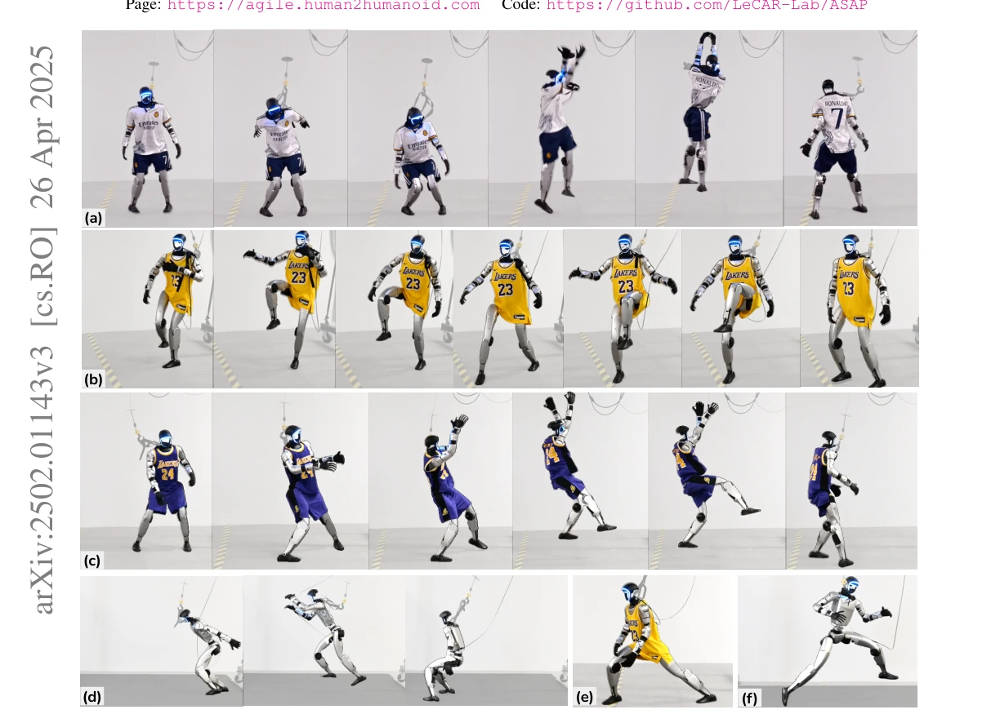
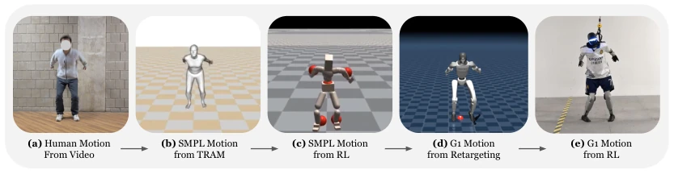
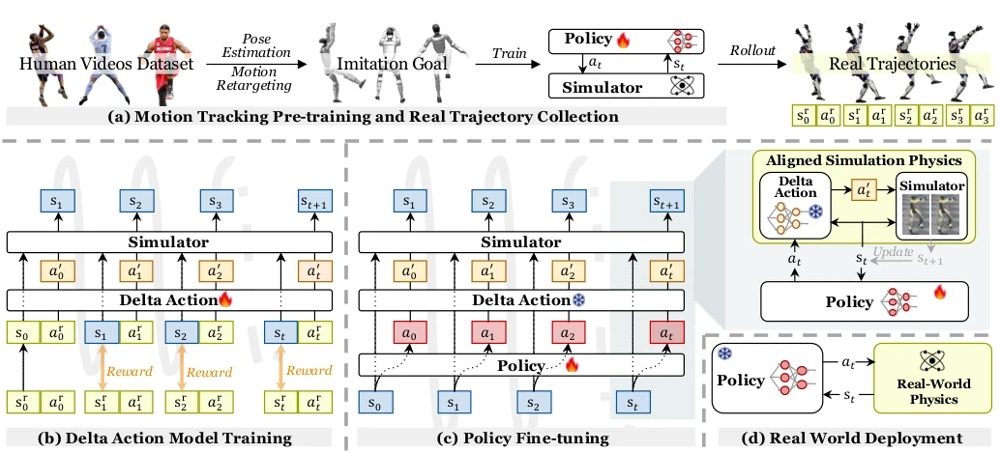
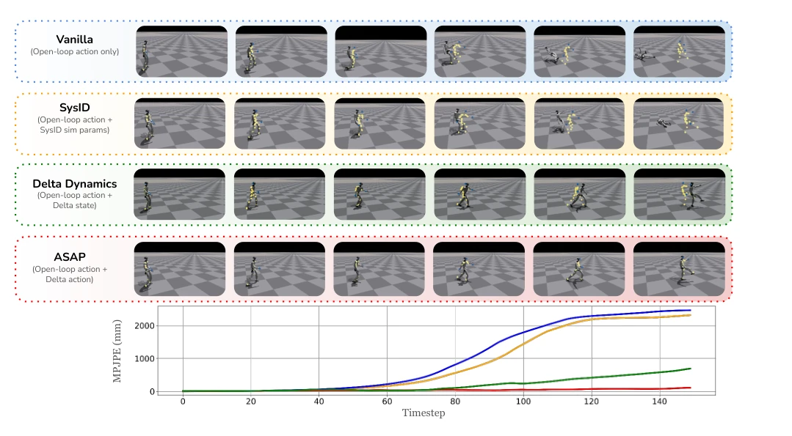
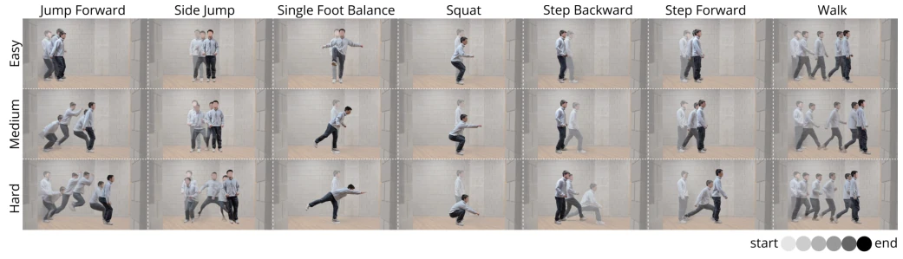
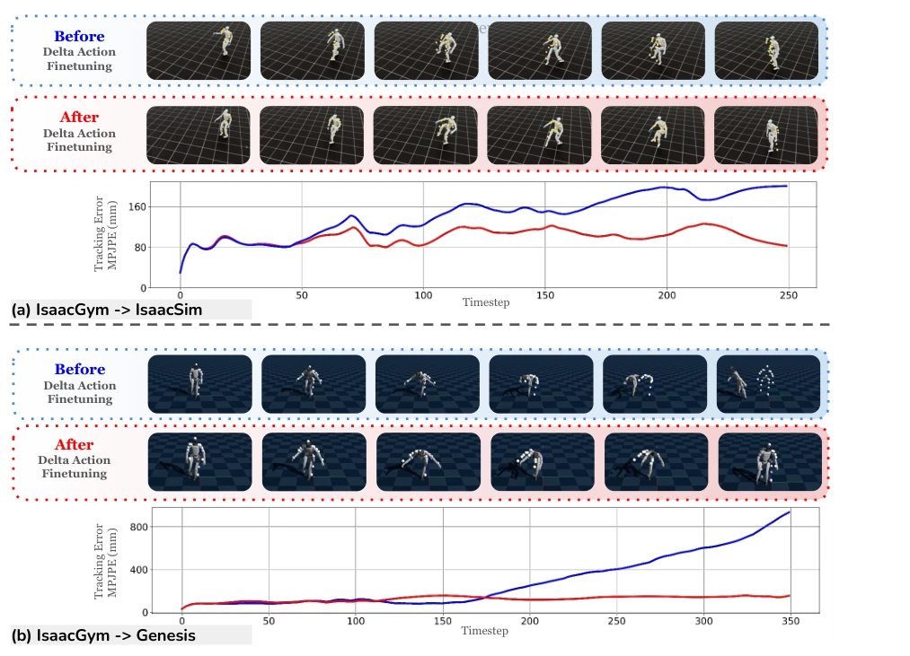
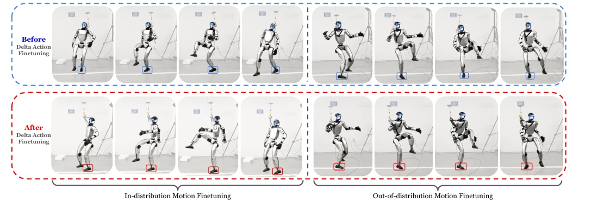
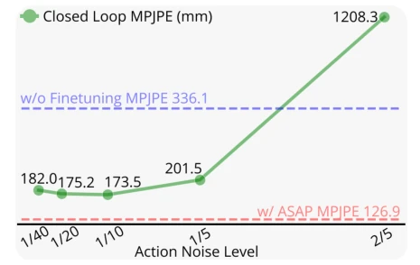
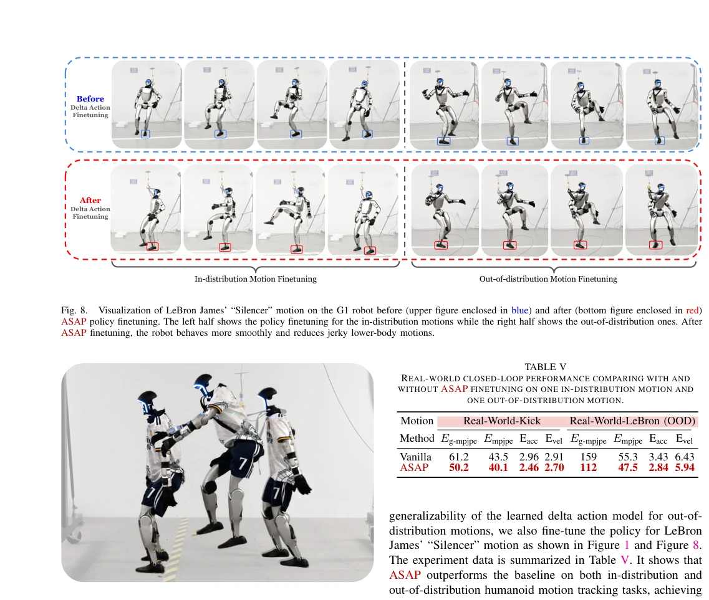
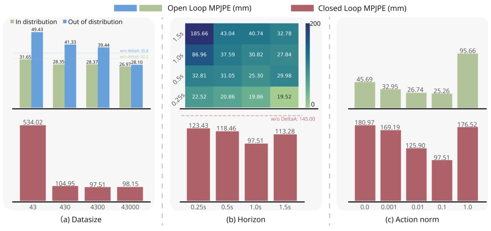

This paper attempts to bridge the physical gap between simulation and reality using "residual actions", which sounds very compelling. The ASAP framework indeed enables the Unitree G1 to perform high-difficulty actions such as front flips and single-leg jumps, being more flexible than traditional SysID and Domain Randomization (DR). However, one should not get too excited too soon, as its core pain point lies in "real-world data is too difficult to acquire". The paper admits that collecting 400 videos led to two robots burning out, finally having to settle for training only a 4-degree-of-freedom ankle residual model. Does this count as "migration for the sake of migration"? Although Sim-to-Sim performance is eye-catching, the generalization of real-world deployment (such as OOD actions) still relies on limited real data. Overall, it is a decent engineering practice, but there is still a distance from general agile humanoid, after all, the pitfalls of the physics engine cannot be filled by just a residual network.
For humanoid robots to be as flexible as humans, the biggest hurdle is the mismatch in physical dynamics between simulation and reality (dynamics mismatch). Existing solutions mainly fall into three categories: System Identification (SysID), Domain Randomization (DR), and Learned Dynamics Models. SysID relies on preset parameter spaces, making it difficult to cover the complex dynamics of the real world, and often requires torque ground truth, which is hard to obtain on hardware [29, 49]. Although DR is commonly used, it often leads to overly conservative policies for the sake of robustness, sacrificing agility [25]. Learned dynamics models are effective in low-dimensional systems such as drones [81, 97], but have not yet been verified on high-dimensional humanoid robots. ASAP aims to solve this pain point by introducing a residual action model to compensate for dynamics differences, achieving high-agility whole-body skill transfer.

Fig. 1. The humanoid robot (Unitree G1) demonstrates diverse agile whole-body skills, showcasing the control policies’ agility: (a) Cristiano Ronaldo’s signature celebration involving a jump with a 180-degree mid-air rotation; (b) LeBron James’s “Silencer” celebration involving single-leg balancing; and (c) Kobe Bryant’s famous fadeaway jump shot involving single-leg jumping and landing; (d) 1.5m-forward jumping; (e) Leg stretching; (f) 1.3m-side jumping.

Fig. 3. Retargeting Human Video Motions to Robot Motions: (a) Human motions are captured from video. (b) Using TRAM [93], 3D human motion is reconstructed in the SMPL parameter format. (c) A reinforcement learning (RL) policy is trained in simulation to track the SMPL motion. (d) The learned SMPL motion is retargeted to the Unitree G1 humanoid robot in simulation. (e) The trained RL policy is deployed on the real robot, executing the final motion in the physical world. This pipeline ensures the retargeted motions remain physically feasible and suitable for real-world deployment.
ASAP adopts a two-stage framework. The first stage is pre-training: extracting SMPL actions from human videos, cleaning them via physics simulation and redirecting them to the robot, training a phase-conditioned motion tracking policy, using an asymmetric Actor-Critic structure to utilize privileged information in simulation. The second stage is post-training and fine-tuning: 1) Deploy the pre-trained policy on real hardware to collect trajectory data; 2) Train a Delta Action model, which learns the residuals of states and actions, minimizing the difference between simulation states and real states, thereby simulating real physics in simulation; 3) Freeze the Delta model, embed it into the simulator, and fine-tune the original policy; 4) Finally deploy the fine-tuned policy on real hardware (without the Delta model). The key innovation lies in training residual actions with RL rather than residual states, and simplifying odometry dependency during real-world deployment through phase variables.

Fig. 2. Overview of ASAP. (a) Motion Tracking Pre-training and Real Trajectory Collection: With the humanoid motions retargeted from human videos, we pre-train multiple motion tracking policies to roll out real-world trajectories. (b) Delta Action Model Training: Based on the real-world rollout data, we train the delta action model by minimizing the discrepancy between simulation state st and real-world state sr t . (c) Policy Fine-tuning: We freeze the delta action model, incorporate it into the simulator to align the real-world physics and then fine-tune the pre-trained motion tracking policy. (d) Real-World Deployment: Finally, we deploy the fine-tuned policy directly in the real world without delta action model.

Fig. 5. Replaying IsaacSim State-Action trajecories in IsaacGym. The upper four panels visualize the Unitree G1 humanoid executing a soccer-shooting motion under four distinct open-loop actions. Corresponding metric curves (bottom) quantify tracking performance. Importantly, our delta action model (ASAP) is trained across multiple motions and is not overfitted to this specific example.
Experiments cover migration from IsaacGym to IsaacSim, Genesis, and real hardware Unitree G1. Baselines include Vanilla, SysID, and DeltaDynamics. Metrics are Eg-mpjpe, Empjpe, Eacc, Evel. Results show ASAP outperforms baselines in both Open-loop and Closed-loop tasks, especially on long-horizon tasks where SysID accumulates errors, DeltaDynamics overfits, while ASAP has better generalization. In real hardware experiments, due to difficulties in data collection, only a 4-DoF ankle residual model was trained, but it still significantly reduced tracking errors on Kick and LeBron actions. Ablation studies show that dataset size and training horizon have significant effects on residual model performance, and residual action fine-tuning is superior to random noise fine-tuning.

Fig. 6. Visual comparisons of motion imitation results across different difficulty levels (Easy, Medium, Hard) for various tasks including Jump Forward, Side Jump, Single Foot Balance, Squat, Step Backward, Step Forward, and Walk.

Fig. 7. Visualization of G1 motion tracking before and after ASAP fine-tuning in IsaacGym, IsaacSim and Genesis. Top: LeBron James’ “Silencer” motion tracking policy fine-tuning for IsaacGym to IsaacSim. Bottom: single foot balance motion tracking policy fine-tuning for IsaacGym to Genesis.

Fig. 8. Visualization of LeBron James’ “Silencer” motion on the G1 robot before (upper figure enclosed in blue) and after (bottom figure enclosed in red) ASAP policy finetuning. The left half shows the policy finetuning for the in-distribution motions while the right half shows the out-of-distribution ones. After ASAP finetuning, the robot behaves more smoothly and reduces jerky lower-body motions.

Fig. 12. MPJPE vs. Noise Level for policies fine-tuned with random action noise. Policies with noise levels β ∈[0.025, 0.2] show improved performance compared to no fine-tuning. Delta action achieves better tracking precision (126 MPJPE) compared to the best action noise (173 MPJPE).
其他图片Other Figures

Fig. 9. We deploy the pretrained policy of a forward jump motion tracking task, challenging the 1.35m-tall Unitree G1 robot for a forward leap over 1m.

Fig. 10. Analysis of dataset size, training horizon, and action norm on the performance of π∆. (a) Dataset Size: Mean Per Joint Position Error (MPJPE) is evaluated for both in-distribution (green) and out-of-distribution (blue) scenarios. Increasing dataset size leads to enhanced generalization, evidenced by decreasing errors in out-of-distribution evaluations. Closed-loop MPJPE (red bars) also shows improvement with larger datasets. (b) Training Horizon: Open- loop MPJPE (heatmap) improves across evaluation points as training horizons increase, achieving the lowest error at 1.5s. However, closed-loop MPJPE (red bars) shows a sweet spot at a training horizon of 1.0s, beyond which no further improvements are observed. The red dashed line represents the pretrained baseline without π∆fine-tun